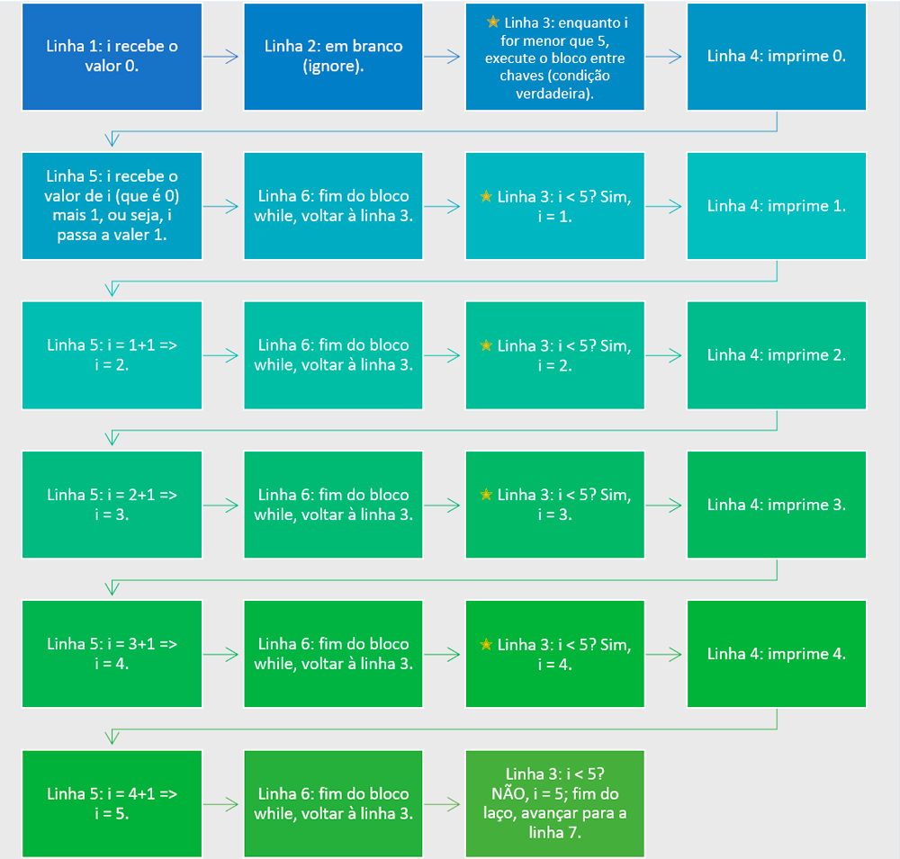

Bloco 01Introdução
Olá, estudante!
Além das estruturas condicionais, linguagens de programação como JavaScript também são capazes de repetir a execução de um bloco de códigos enquanto uma condição é válida ou por um delimitado conjunto de valores preestabelecidos. Essas estruturas de repetição são, muitas vezes, denominadas laços de repetição, loops ou iteradores.
Executa um bloco de códigos por um determinado número de iterações.
Executa um bloco enquanto uma condição é válida — pode nunca executar.
Também repete enquanto a condição é verdadeira, mas garante pelo menos uma execução.
Nos próximos blocos, vamos explorar como os laços de repetição no JavaScript funcionam na prática. Bons estudos!
Bloco 02Estrutura de repetição for
Em JavaScript, a instrução for (em português, “para”) realiza a repetição de um bloco de código PARA um determinado número de iterações preestabelecidas. A sintaxe do for requer três expressões (FLANAGAN, 2011):
- InicializaçãoUma variável que receberá o valor de início.
- TesteA condição de parada do laço.
- IncrementoA condição de incremento (ou decremento) aplicada ao final de cada rodada.
for(início; condição de parada; passo){
// comandos que serão repetidos
}Observe o exemplo a seguir:
for(i = 0; i < 5; i = i+1){
console.log(i);
}Assim, podemos interpretar esse código da seguinte maneira: PARA a variável i, iniciando em 0, ENQUANTO ela for menor do que 5, execute o bloco de código delimitado pelas chaves { } SOMANDO 1 a cada rodada.
Observe que nossa variável de início (denominada i) recebe o valor 0, logo, a contagem começará nesse valor. A condição de parada é dada por i < 5, ou seja, o bloco será executado enquanto i for menor que 5. Por fim, o passo será dado por i = i+1: a cada rodada, o valor será incrementado em um.
Na primeira rodada, i valerá 0. Ao final dessa iteração, i receberá o valor anterior acrescido de 1. Como 1 é menor que 5, o bloco será executado novamente; a seguir, será impresso o valor de i (1), que será incrementado novamente — então i passará a valer 2 e o bloco será repetido; depois, ele passará a valer 3 e depois 4. Após imprimir o valor 4, o bloco será encerrado e i passará a valer 5. Como a nossa condição de execução era que o bloco se repetisse enquanto i fosse menor que 5, e como i agora vale exatamente 5, o bloco foi interrompido imediatamente, antes de i ser impresso novamente.
Cláusulas break e continue
Podemos alterar o fluxo de execução de um laço for usando as chamadas cláusulas de parada (break) e de continuação (continue). No exemplo a seguir, repetimos o laço que imprime os números 0, 1, 2, 3 e 4, entretanto, agora, utilizamos um comando condicional para analisar quando o valor de i for igual a 2:
for(i = 0; i < 5; i++){
if(i == 2){ // se i é igual a 2
break; // pare imediatamente
}
console.log(i);
}++
Perceba que, no código apresentado, substituímos a expressão i = i+1 por apenas i++. Ambas as expressões têm o mesmo significado, sendo i++ uma forma contraída de notação usada para incrementar o valor de uma variável.
Note que, ao executarmos esse código, só são impressos no console os números 0 e 1. Isso ocorre porque utilizamos a cláusula break para interromper a execução do laço quando a variável i for igual a 2.
Poderíamos, ainda, utilizar a cláusula continue para saltar uma determinada iteração do bloco. Observe o exemplo a seguir:
for(i = 0; i < 5; i++){
if(i == 2){ // se i é igual a 2
continue; // encerre a iteração atual
}
console.log(i);
}Nesse caso, quando i passou a valer 2, a linha 3 do script foi executada, ativando a cláusula continue. Essa cláusula interrompeu a execução atual do laço for e saltou para a próxima iteração — ou seja, a linha 5 não foi executada, o valor 2 não foi impresso, a variável i passou a valer 3 e o bloco do laço for foi repetido mais uma vez.
Nos próximos módulos, veremos como usar o laço for para navegar por objetos e arrays; mas antes, vamos apresentar os outros tipos de laços: while e do... while.
for, que repete um bloco por um conjunto delimitado de vezes estabelecido por três expressões opcionais. Para visualizar o objeto, acesse seu material digital.
Bloco 03Estrutura de repetição while
A estrutura de repetição while (em português, “enquanto”) repete um bloco de código ENQUANTO uma determinada condição for verdadeira. Observe a sintaxe do comando:
declarar variável de entrada
while(condição de parada){
comando 1
comando 2
...
Comando n
incrementar variável de entrada
}No exemplo a seguir, vamos utilizar mais uma vez nossa variável i para percorrer os valores de 0 a 4, mas, dessa vez, usando o laço while:
i = 0 // declaração do valor de início
while(i < 5){ // condição de parada
console.log(i); // imprime os dados na tela
i++; // incrementação: +1
}Nesse caso, foi necessário declarar a variável i antes do início do bloco (vamos utilizar 0, pois, em geral, contagens em programação começam do 0). Além disso, o while recebeu como parâmetro de entrada apenas a expressão com a condição de parada (i < 5). A seguir, o bloco foi executado enquanto a condição era verdadeira; e note que, na linha 5, foi necessário declarar um comando que altera o valor de i, somando 1 ao valor atual (i++).
Para que você compreenda melhor o fluxo do código apresentado anteriormente, observe a figura a seguir:

while que imprime valores de 0 a 4. Uma estrela foi adicionada para ilustrar todas as vezes que o laço while recomeçou.
Fonte: elaborada pelo autor.
Loop infinito
Observe o código a seguir:
i = 0 // declaração do valor de início
while(i < 5){ // condição de parada
console.log(i); // imprime os dados na tela
}Note que a linha que incrementa o valor de i foi removida. Você consegue imaginar o que aconteceria se executássemos esse código?
Como o valor de i não foi alterado durante a execução do bloco, ele sempre teria o valor 0; logo, a condição de parada jamais seria estabelecida e o laço continuaria executando repetidamente. Quando um bloco de código se repete sem uma condição que permita sua parada, ele é chamado de loop infinito (MARIANO; MELO-MINARDI, 2017). Esse tipo de erro de codificação é considerado grave e pode ser responsável por travar o computador, uma vez que o processamento do bloco pode requerer todo o potencial de uso da CPU.
Por esse motivo, este exemplo é o único da unidade que não possui o botão “Executar”.
while, que permite que um bloco seja executado enquanto uma condição for verdadeira. Para visualizar o objeto, acesse seu material digital.
Bloco 04Estrutura de repetição do...while
O comando do... while (na tradução para o português, “faça... enquanto”) também executa um bloco enquanto uma condição é verdadeira, assim como o comando while. Entretanto, o do... while garante que o bloco de código seja executado pelo menos uma vez, enquanto um bloco do tipo while pode não ser executado caso a condição seja inicialmente falsa. Observe a sintaxe:
declarar variável de entrada
do{
comando 1
comando 2
...
Comando n
incrementar variável de entrada
}while(condição de parada)Note que o teste condicional de parada é realizado ao final da execução do bloco. Agora, vamos ver na prática como utilizar a instrução do... while:
// Usando DO... WHILE
i = 0 // declaração do valor de início
do{
console.log(i); // imprime os dados na tela
i++; // incrementação: +1
}while(i < 5); // condição de paradaEsse código imprimirá na tela os números 0, 1, 2, 3 e 4, de forma similar aos exemplos apresentados anteriormente. Vamos, então, tentar compreender na prática qual é a diferença em relação ao laço while. Observe o exemplo a seguir:
// Usando WHILE
i = 10 // declaração do valor de início
while(i < 5){ // condição de início/parada
console.log(i); // imprime os dados na tela
i++; // incrementação: +1
}Note que nada será impresso no console, uma vez que i tem valor inicial 10 e a condição de execução é enquanto i for menor que 5 — portanto, o bloco será completamente ignorado.
Agora, vamos repetir o mesmo problema, mas utilizando a instrução do... while:
// Usando DO... WHILE
i = 10 // declaração do valor de início
do{
console.log(i); // imprime os dados na tela
i++; // incrementação: +1
}while(i < 5); // condição de paradaDessa vez, o conteúdo do bloco foi executado pelo menos uma vez — ou seja, foi impresso na tela o valor 10. Assim, podemos concluir que o laço do...while deve ser usado quando há a necessidade de o bloco ser executado pelo menos uma vez.
do... while usando JavaScript. Para visualizar o objeto, acesse seu material digital.
Bloco 05Estudo de caso
Automatizar a agenda de entrevistas
Após implementar as novas regras impostas pela equipe de recursos humanos da Empresa A no código fonte do sistema que pré-seleciona estagiários para entrevista, o setor de RH requisitou suporte para novas atividades.
Agora, o sistema está avaliando corretamente quais estudantes foram classificados para a segunda etapa; por isso, a equipe de RH tem novas preocupações. Uma delas é agendar um horário de entrevista para cada um deles.
Diante disso, ajude a equipe a automatizar a marcação das entrevistas dos candidatos à vaga de estagiário. Para isso, construa um script que determine os horários em que deverão ocorrer as entrevistas, observando as seguintes regras:
- cada entrevista deverá durar 10 minutos, com um período extra de cinco minutos, ou seja, cada entrevista deverá ocorrer em, no máximo, 15 minutos;
- os candidatos deverão entrar um após o outro;
- o almoço deverá ocorrer das 12h às 14h — logo, não haverá entrevistas nesse intervalo;
- a empresa opera das 9h da manhã às 17h da tarde.
Construa um código em JavaScript que calcule um horário para a entrevista de cada candidato, bem como o número máximo de candidatos a serem atendidos por dia. Você deve utilizar o seu editor de códigos para construir esse script.
Bloco 06Resolução do estudo de caso
Podemos construir o código fonte da seguinte forma:
var hora = 9
var minutos = 15
var total_entrevistas = 0
const saida = 17
for(i = hora; i < saida; i=i+1){
if((i == 12)||(i==13)){
continue
}
for(j = 0; j < 60; j = j+minutos){
total_entrevistas++;
if(j == 0){
console.log("Entrevista #",
total_entrevistas,"=>", i+":"+j+"0")
}
else{
console.log("Entrevista #",
total_entrevistas,"=>", i+":"+j)
}
}
}- Horários de entrada e de saída — linhas 1 e 4Usamos
constna variável de saída, pois é um horário que não será alterado. Também estabelecemos os minutos na linha 2. - Laço externo — linha 5Percorre as horas, do horário de entrada até o horário de saída.
- Horário de almoço — linhas 6 a 8Removemos as 12h e as 13h com a cláusula
continue. - Laço interno — linha 9Faz o cálculo dos minutos. Lembre-se de que há 4 entrevistas por hora: 00, 15, 30 e 45 min. Para incrementar o segundo
for, usamos um aumento a cada 15 minutos (variávelminutos). - Impressão — linhas 10 a 18Dentro do segundo laço, incrementamos o contador de entrevistas e imprimimos a entrevista atual. Precisamos de um comando condicional para verificar se os minutos seriam iguais a 0, pois queríamos que fossem impressos dois valores:
00.
Ao final, o código imprimirá a seguinte lista de entrevistas:
ComplementoSaiba mais
-
do...while (MDN Web Docs)
Neste link, você aprenderá as características da declaração
do...whileusando JavaScript. https://mzl.la/3q1Vxjt — Acesso em: 16 dez. 2021.
SínteseQual laço usar?
| Laço | Use quando | Executa ao menos uma vez? |
|---|---|---|
for | o número de repetições é conhecido ou delimitado. | Não |
while | a repetição depende de uma condição que pode já ser falsa no início. | Não |
do...while | o bloco precisa rodar ao menos uma vez, independentemente da condição. | Sim |